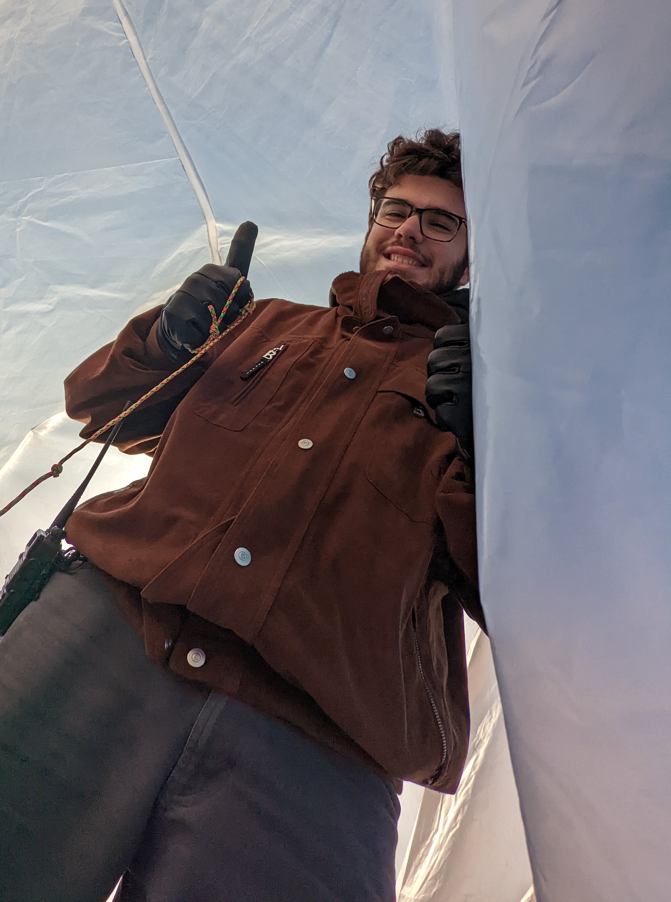

Tony Regli
Tony Regli is a sophomore studying aerospace engineering at the University of Maryland: College Park. His research interests include human factors engineering for flight and using computer vision and AI to control aerospace systems.
Balloon Payload Program

Tony is a member of the Univeristy of Maryland Balloon Payload Program (BPP), a student-run club that launches high altitude weather balloons carrying various payloads.
Electric Guitar
Tony designed an electric guitar from scratch, lasercutting the body out of wood and wiring the internal electronics by hand.
Custom Kerbal Controller
He designed a custom game controller for the game Kerbal Space Program, using an Arduino to handle various analog and digital inputs